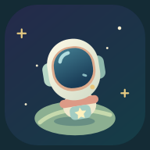

A small home in a very big universe.
Gathering your neighborhood…
Progress stays in this browser when storage is available. Private browsing, clearing website data, or device cleanup can erase it. On iPhone: open in Safari, tap Share → Add to Home Screen.